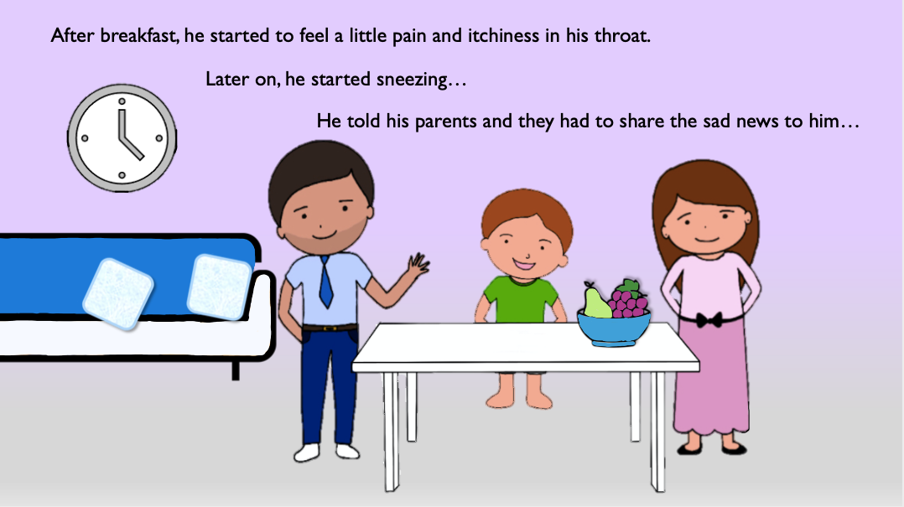
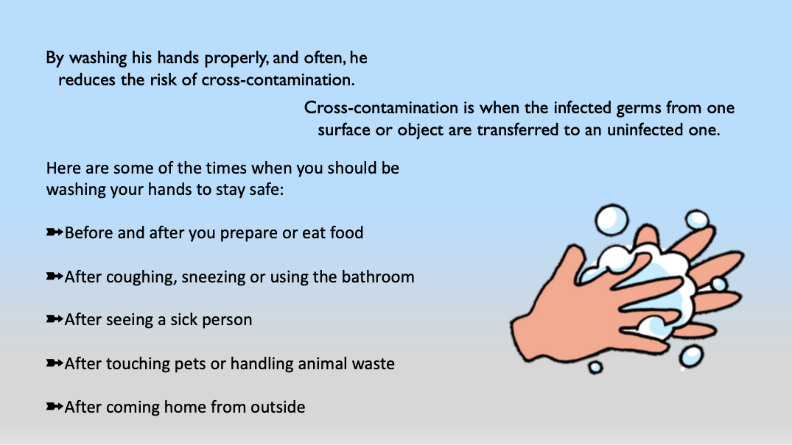
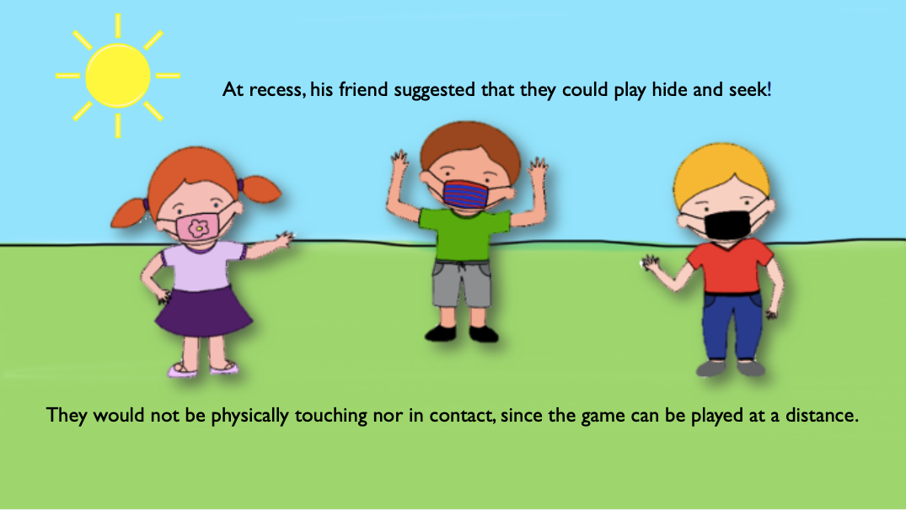
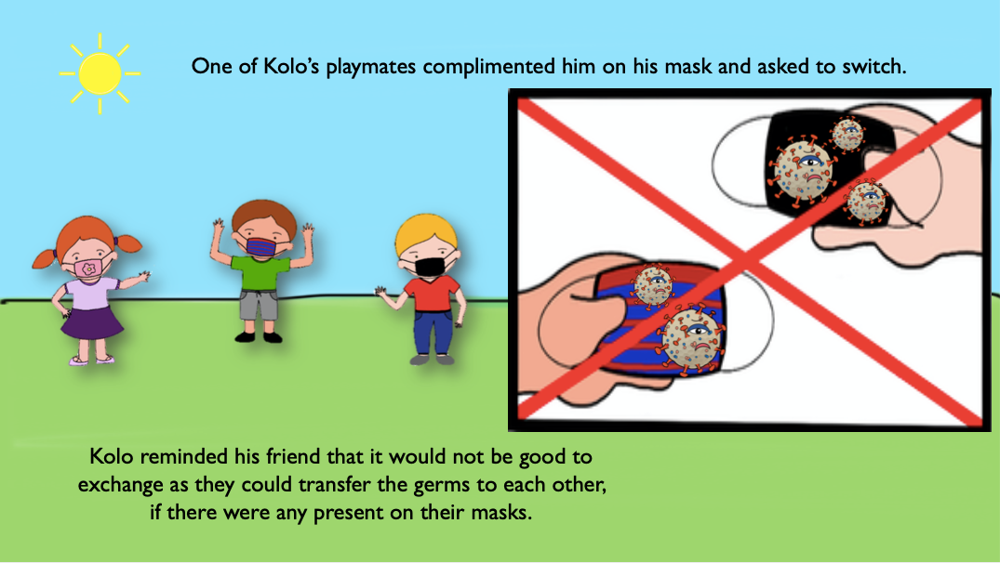
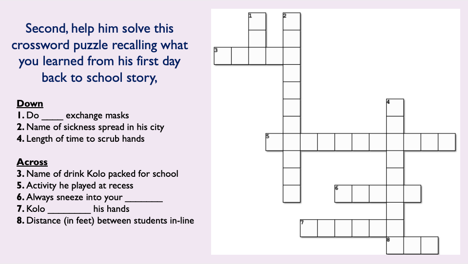
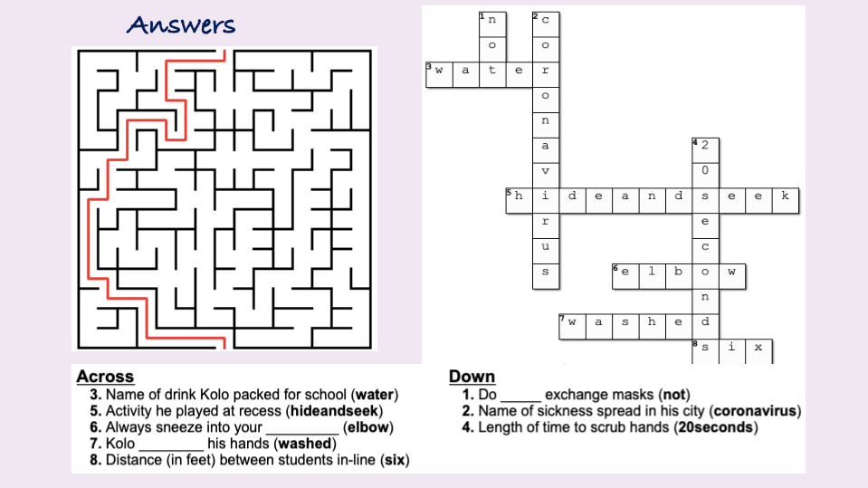
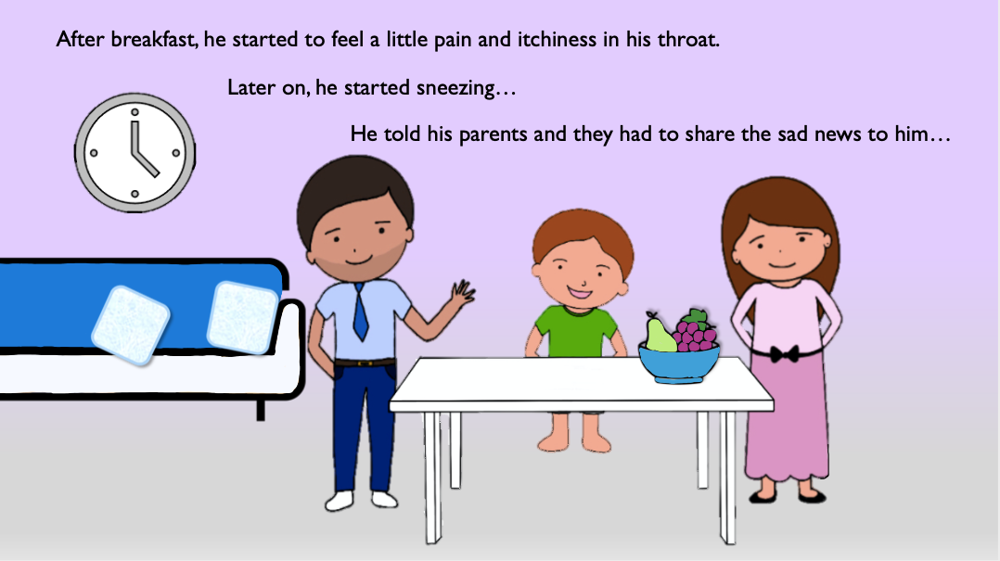
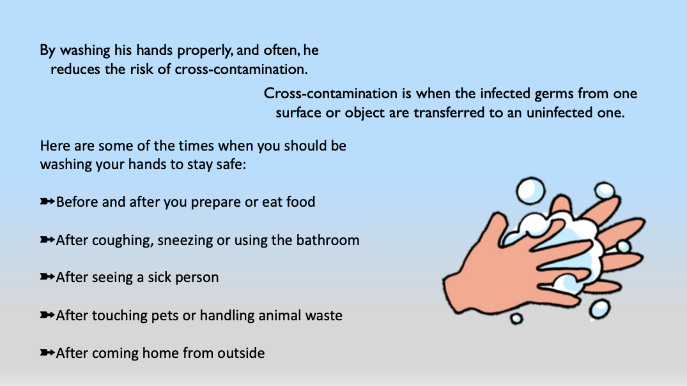
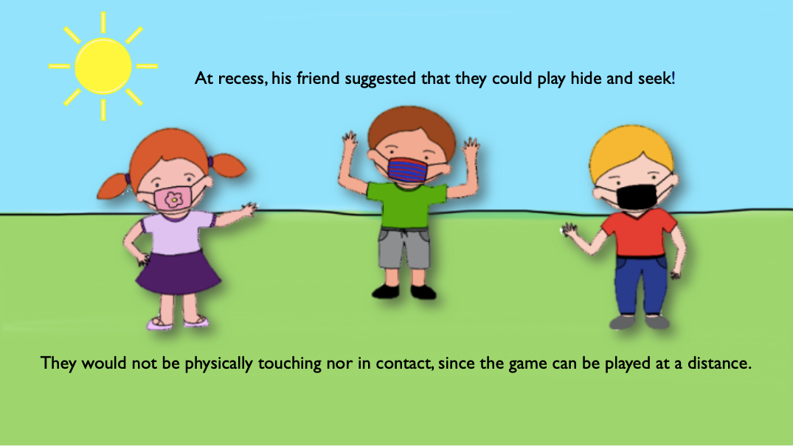
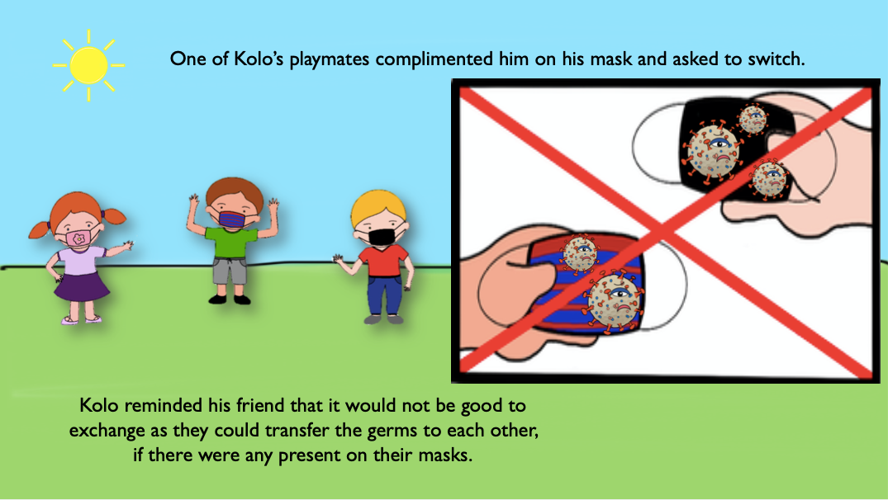
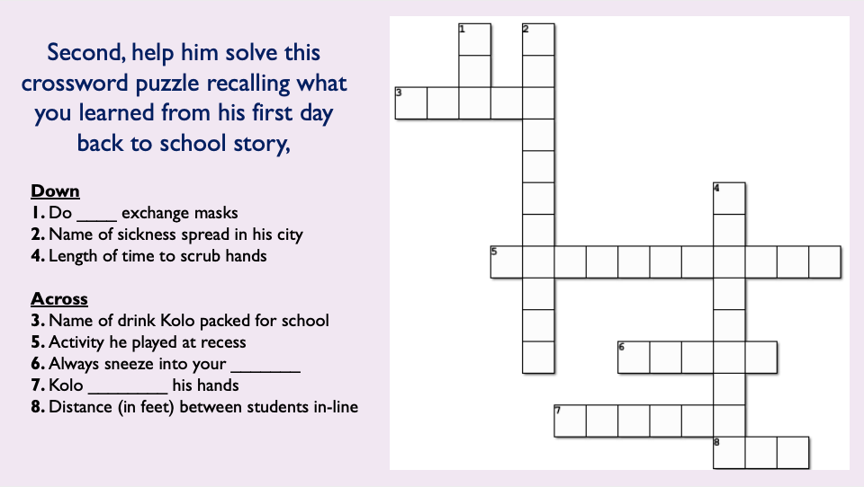
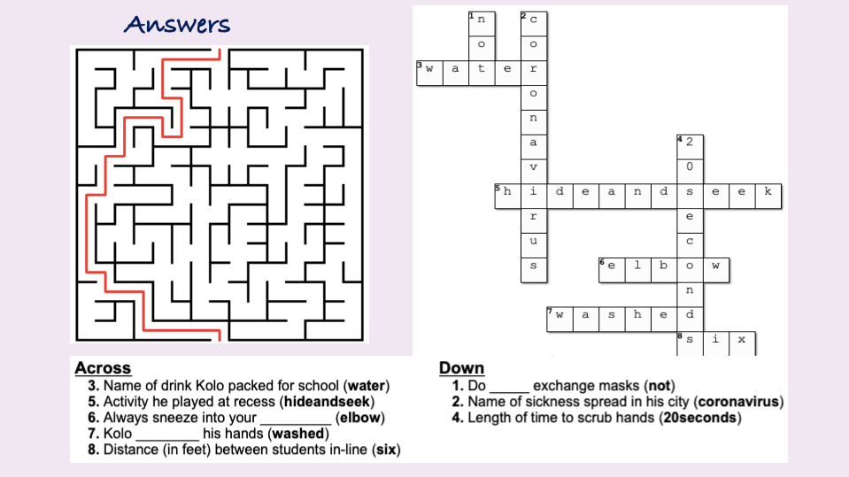
The storybook is also available in a pdf format to read and complete activities anytime you desire.
Download hereAbout Me
-
Written by Sara Ibrahim, fourth year Biomedical Sciences student at the University of Waterloo.
Illustrated by Sara Ibrahim and Sharon Eck.
-
My inspiration
I was inspired by the kids playing outside, over summer 2020, to write this book. Many of them, when asked, did not have much information regarding Covid-19 and were also questioning the changes in going back to school after so many months off. I also wanted to add the activity section in the end so kids can actively participate and put their knowledge to use in a fun way.
-
Acknowledgment
Special thanks to Dr. H. Engelhardt, Department of Biology, and Dr. D. Bratton, Culture and Language Studies, Renison University College, at the University of Waterloo, for providing an immense amount of knowledge, feedback and support towards the completion of this book. Without their assistance and guidance, I would not have been able to provide this book as a source of information to be shared with children, parents and teachers.